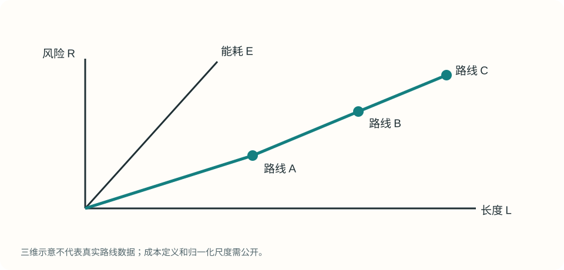
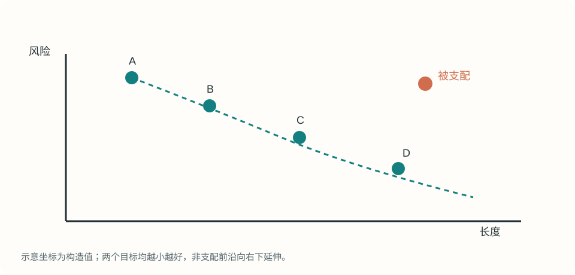

多目标规划：最短、最安全、最省能耗，不能同时都最好
把路线评价从单个分数扩展成成本向量，用 Pareto 支配筛出非劣解，再理解加权和、归一化和决策偏好如何改变最终路线。
多个必须到达的地点，与多个需要权衡的目标，是两类不同问题
“多目标路径规划”常被用来描述两种任务。第一种是多目标点/多站点访问：机器人要按某个顺序访问仓库、充电站或客户，重点是决定访问顺序，常与 TSP、VRP、带时间窗的路线规划有关。第二种是多目标函数优化：在同一对起终点之间，同时考虑长度、风险、能耗、时间和净空等相互冲突的指标。
这两类问题可以叠加，但不能混为一谈。本章重点讨论第二种：同一组可行路径在多个成本维度上形成权衡；最后再说明多站点路线排序如何与路径代价模型组合。
ROBOT MOTION PLANNING · 20
路径成本不是一个数，而是一组带单位的指标
设可行路径集合为 Π。对路径 π，可以定义长度 L(π)、风险暴露 R(π)、能耗代理 E(π) 和时间 T(π)。多目标规划的输出是成本向量：
风险暴露可以是沿路径累积的风险场代价，能耗可以是由车辆模型、速度、加速度和转向推导的估计值；这些都不是天然唯一的定义。设计目标前必须写明数据来源、单位、积分方式和约束范围。尤其不能把“概率”与“风险成本”直接等同。
ROBOT MOTION PLANNING · 20

Pareto 支配：不必提前把所有偏好压成一个权重
对两个待最小化成本向量 A、B，如果 A 的每个分量都不大于 B，且至少一个分量严格更小，就称 A 支配 B。被其它可行解支配的路线没有必要保留；未被支配的路线构成 Pareto 集，其成本向量形成 Pareto 前沿。
沿 Pareto 前沿移动，改善某一目标通常需要牺牲至少另一个目标。前沿不自动告诉决策者选哪条路线；它把“有哪些非支配权衡”显式呈现出来，让安全、时间、能耗等业务偏好可以被审查。
ROBOT MOTION PLANNING · 20

加权和简单，但先归一化并理解它看不到什么
常见做法是把多个成本压成单个标量：
s_i 是有意义的尺度（例如参考范围、工程容许值或基准量），用于避免米、焦耳和秒直接相加。w_i 表示偏好，不是算法自动学到的“客观重要性”。更改权重会改变最优路线。
线性加权和通常只能找到 Pareto 前沿上的受支持解；当可行成本集合的 Pareto 前沿非凸时，部分非支撑 Pareto 点不能通过任何正权重的线性加权和成为最优解。可考虑 ε-constraint、词典序优化或直接近似 Pareto 集的方法。
工程上如何把偏好变成可审查的路线选择
- 先设硬约束：碰撞、最小净空、最大坡度、最大曲率、法规速度等不应仅作为可被权重抵消的软惩罚。
- 定义可测目标：长度、风险暴露、能耗估计与时间要有明确单位、来源和统计窗口。
- 确定归一化尺度：写出参考值或可接受范围，避免权重被数值量级暗中决定。
- 生成候选前沿：保留非支配路线，并记录规划器、预算和近似误差。
- 由任务偏好选解：把“安全优先”“时间优先”等权重或阈值明确展示给操作人员。
- 验证执行可行：选中的路线仍需进行运动学、动态障碍、速度规划和控制跟踪验证。
对于多站点访问问题，可以把每一段站点间的路径规划成本作为 TSP/VRP 边权；若每段本身也是多目标，就需要更复杂的组合优化或在上层先选定偏好策略。
交互：偏向短路线，还是偏向低风险？
下方三条非支配候选路线分别代表短、均衡和低风险偏好。按钮切换归一化权重，页面按加权成本重新选择；被支配的候选不会参与选择。
长度优先：A-short（归一化加权成本最低）。
路线成本是本章代码中的教学构造值；交互用于解释偏好变化，不代表真实环境测量。
计算一个小型候选集合的 Pareto 前沿
Python 3.10+，仅用标准库。五条候选路线有长度、风险暴露和能耗代理三个待最小化成本。程序先删除被支配解，再按归一化加权和分别选出长度优先与风险优先的路线。
routes={
"A-short": (8.,9.,5.), # length, risk exposure, energy proxy
"B-balanced": (10.,5.,6.),
"C-safe": (12.,3.,4.),
"D-dominated": (14.,7.,8.),
"E-dominated": (11.,6.,7.)
}
def dominates(a,b):
return (all(x<=y for x,y in zip(a,b))
and any(x<y for x,y in zip(a,b)))
def pareto_front(candidates):
names=list(candidates)
return [name for name in names
if not any(dominates(candidates[other],candidates[name])
for other in names if other!=name)]
front=pareto_front(routes)
assert set(front)=={"A-short","B-balanced","C-safe"}
assert "D-dominated" not in front and "E-dominated" not in front
# Normalize heterogeneous units before applying a preference vector.
scales=(14.,10.,8.)
def weighted_choice(weights):
assert len(weights)==3 and all(w>=0 for w in weights)
assert abs(sum(weights)-1.)<1e-9
return min(front,key=lambda name:sum(
w*value/scale
for w,value,scale in zip(weights,routes[name],scales)))
length_first=weighted_choice((.8,.1,.1))
risk_first=weighted_choice((.1,.8,.1))
assert length_first=="A-short"
assert risk_first=="C-safe"
print("Pareto routes:",front)
print("length preference:",length_first,routes[length_first])
print("risk preference:",risk_first,routes[risk_first])断言确认 A、B、C 均为非支配解，D、E 被其它解支配；权重变化会从 A-short 切换到 C-safe。该小集合只用于演示 Pareto 运算，不是实际机器人路线生成算法，也不提供真实风险或能耗估计。
多目标结果的难点是定义目标和治理偏好
- 目标相关性：长度、时间和能耗可能高度相关；重复计入相似成本会放大某种偏好。
- 风险建模：概率、暴露、严重程度和安全约束需要分开定义，不能只用一个模糊风险分数。
- 权重敏感性：小幅改变权重可能让解在前沿上跳变，应做敏感性分析。
- 前沿近似：有限采样和有限预算得到的是近似非支配集，不等于完整 Pareto 前沿。
- 决策责任：权重和阈值反映任务偏好与组织约束，应可追踪、可解释、可复核。
在 OMPL 中，MultiOptimizationObjective 可以把路径长度、净空等优化目标按权重组合；这是工程接口，不代表加权和能恢复所有非凸 Pareto 区域。多目标规划的算法设计和最终路线偏好选择应当分开记录。